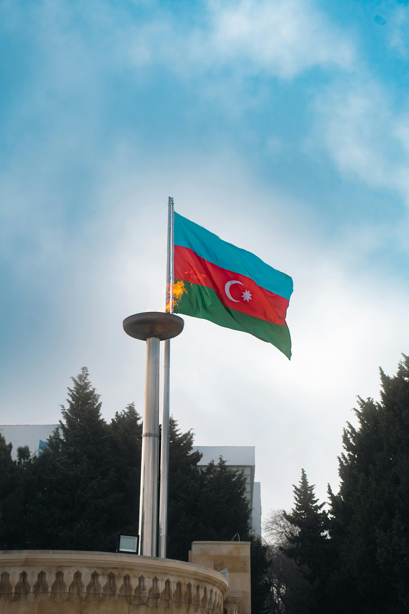
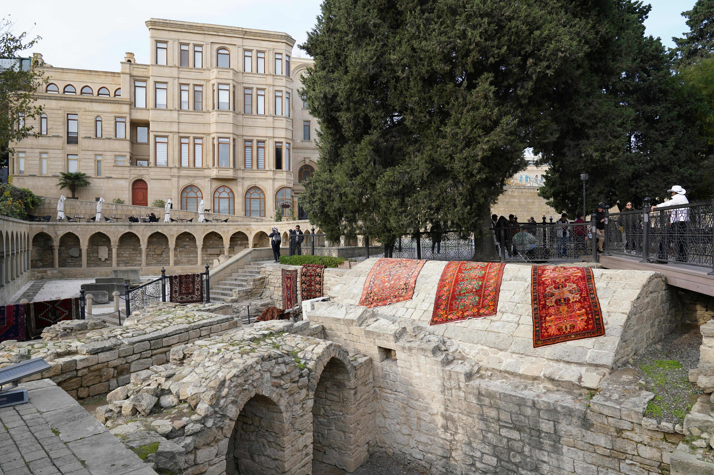
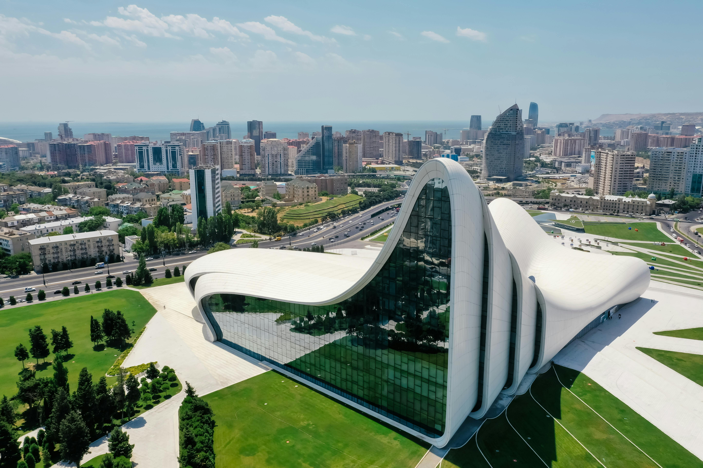
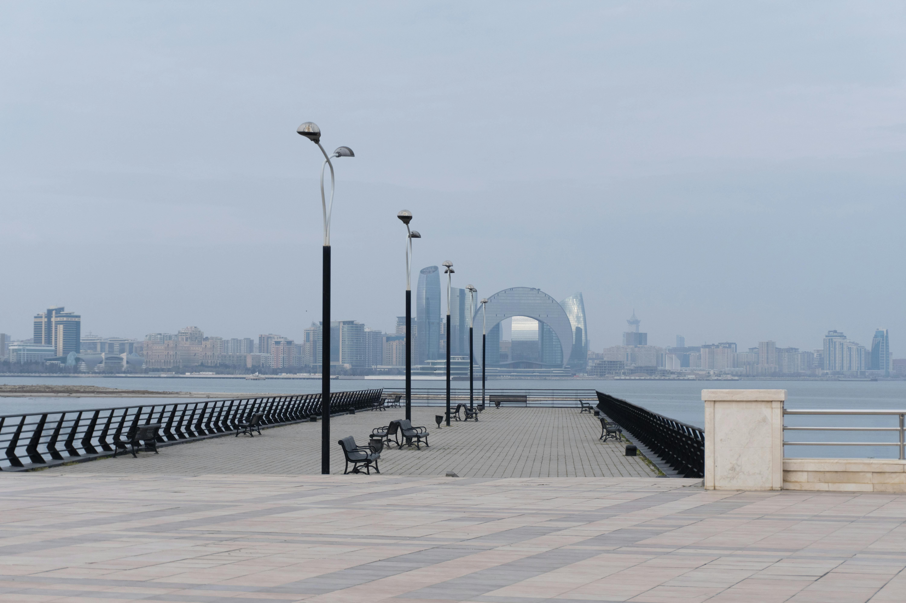
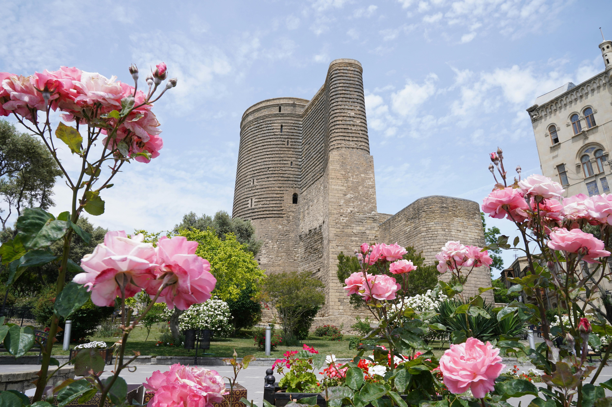

Kafkaslar’ın incisi
AZERBAYCAN
Bakü’den Öne Çıkan Yerler

Alev Kuleleri
Bakü’nün modern mimarisinin en dikkat çekici simgelerinden biridir.

İçərişəhər
UNESCO Dünya Mirası listesinde yer alan tarihi şehir merkezidir.

Haydar Aliyev Merkezi
Modern mimarisiyle Bakü’nün en özel kültür yapılarından biridir.

Bakü Bulvarı
Hazar Denizi kıyısında yer alan yürüyüş ve sosyal yaşam alanıdır.

Kız Kulesi
Bakü’nün en önemli tarihi sembollerinden biridir.